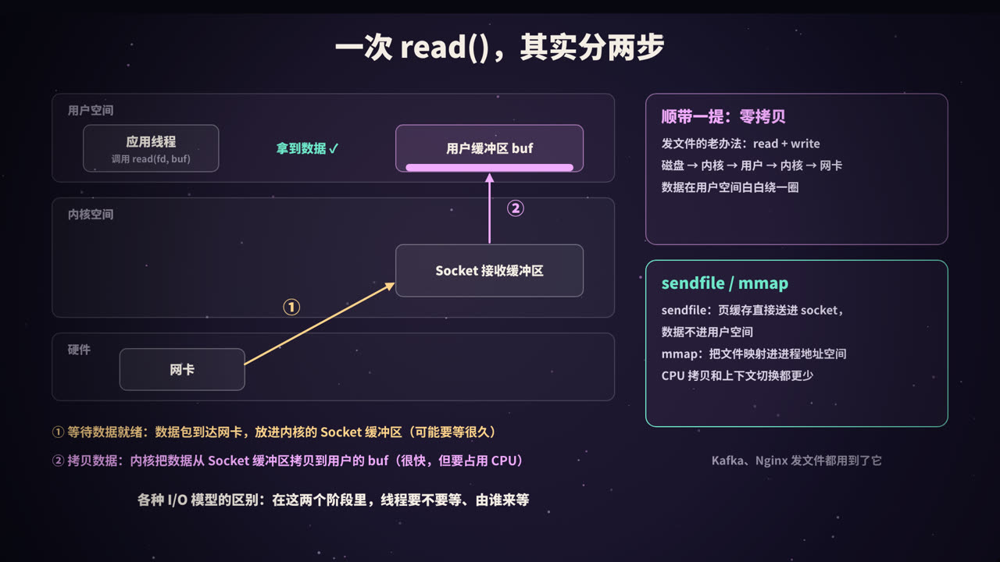
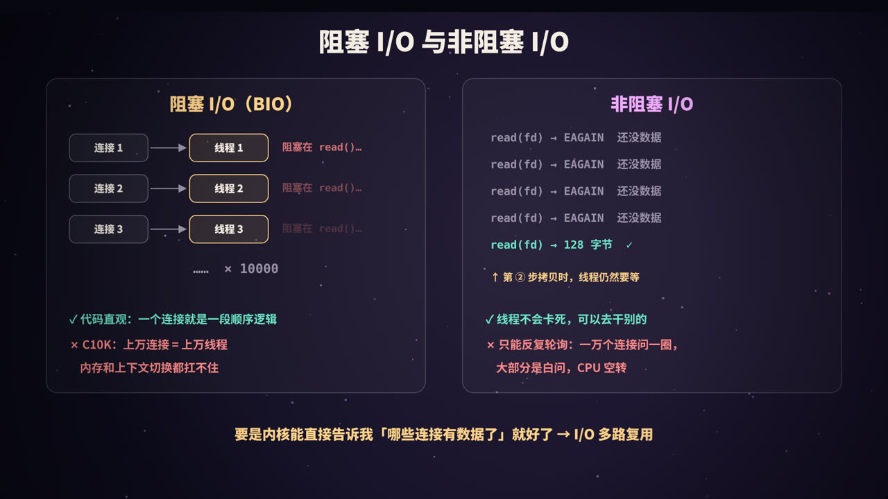
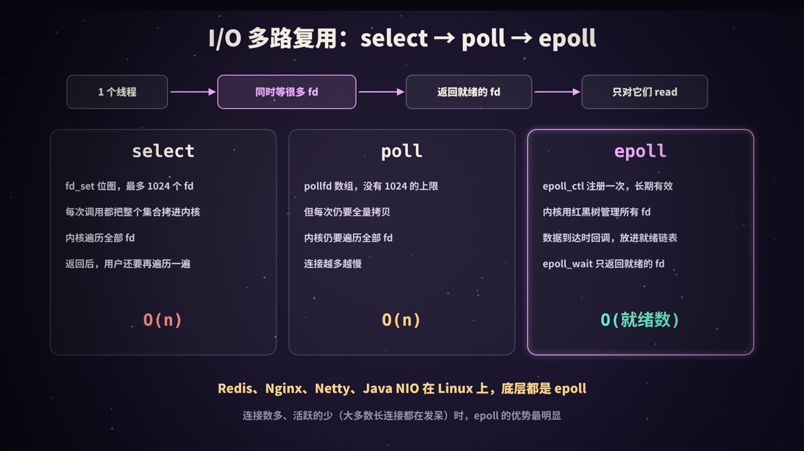
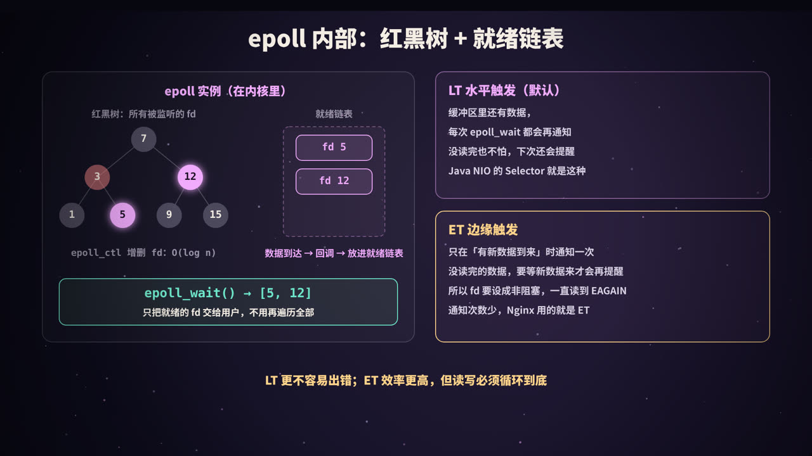
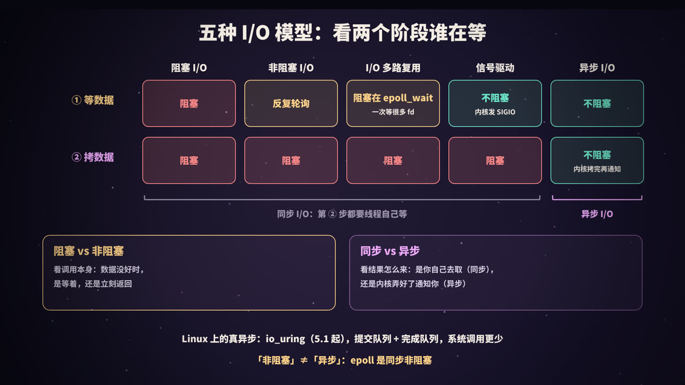
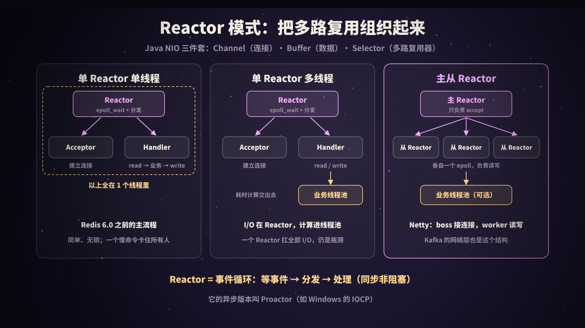

一个线程，怎么同时伺候上万个连接
写一个网络服务，最直观的写法是：来一个连接，开一个线程，线程里循环「读请求 → 处理 → 写响应」。代码顺着逻辑往下写，非常好懂。
问题出在连接数上来以后。一个聊天服务、一个推送网关、一个 Redis，常常同时挂着几万、几十万个长连接，而绝大多数连接在绝大多数时间里都没有数据，用户只是开着 App 而已。一连接一线程意味着：
- 一万个连接就是一万个线程。每个线程都有自己的栈（Java 平台线程默认预留 1 MB 虚拟地址空间），还有内核里的调度结构；
- 这些线程几乎都阻塞在
read()上等数据，什么也没干，却占着资源； - 线程多了，操作系统在它们之间来回上下文切换，CPU 时间花在了「换人」上，而不是干活上。
这就是上世纪末被正式提出的 C10K 问题：单机怎么同时处理一万个并发连接？
而另一边，Redis 在 6.0 之前，网络读写和命令执行都由一个主线程完成，照样能同时服务上万个客户端连接；Nginx 每个 worker 进程也只有一个事件循环。它们靠的是同一个东西：I/O 多路复用（Linux 上是 epoll）+ 事件循环。
这篇文章从最底层的「一次 read 到底发生了什么」讲起，依次讲清：
- 五种 I/O 模型：阻塞、非阻塞、多路复用、信号驱动、异步；
- select、poll、epoll 的区别，epoll 为什么快，LT 和 ET 是什么；
- 「同步 / 异步」和「阻塞 / 非阻塞」到底怎么区分；
- Reactor 模式的三种线程模型，Java NIO、Netty、Redis 分别对应哪种；
- 零拷贝（sendfile、mmap）。
每个关键结论都配了能直接运行的代码，输出均为本机（Linux 6.x、Python 3.13、OpenJDK 21）真实运行结果。
本系列《进程、线程与协程》讲了线程本身的开销，《线程池》讲了线程的复用，《Redis 缓存》提到了 Redis 的单线程模型，这一篇把它们背后的 I/O 机制串起来。
一次 read()，其实分两步

用户空间与内核空间
应用程序运行在用户空间，不能直接操作网卡。网络数据的收发由内核负责：
- 网卡收到数据包后，通过 DMA 把数据写进内存，再由内核协议栈处理，最终放进这个连接对应的 socket 接收缓冲区；
- 应用调用
read(fd, buf, len)（或recv）时，内核把接收缓冲区里的数据拷贝到应用提供的buf里。
这里的 fd 是文件描述符（file descriptor），一个小整数。在 Linux 上，打开的文件、socket、管道都用 fd 表示，「一切皆文件」。
两个阶段
所以一次网络读取，实际上包含两个阶段：
| 阶段 | 做什么 | 耗时特点 |
|---|---|---|
| ① 等待数据就绪 | 等数据从网络到达，进入内核的 socket 接收缓冲区 | 不确定，可能几毫秒，也可能几小时（对方一直不发） |
| ② 拷贝数据 | 内核把数据从 socket 缓冲区拷贝到用户空间的 buf | 很快，但需要 CPU 参与 |
所有 I/O 模型的区别，都在于这两个阶段里，调用线程是否被阻塞、由谁来等。 把这句话记住，后面的五种模型就都是它的变体。
阶段 ① 是真正「浪费时间」的地方。一个线程如果傻等在阶段 ①，那它在等待期间就什么也干不了。I/O 模型演进的主线，就是怎么让线程不再傻等阶段 ①。
阻塞 I/O 与非阻塞 I/O

阻塞 I/O（BIO）
socket 默认就是阻塞的。调用 read() 时，如果接收缓冲区里没有数据，线程就被挂起（阶段 ①），直到数据到达并拷贝完成（阶段 ②）才返回。
因为一个线程在 read() 上会一直卡住，所以要同时服务多个连接，只能一个连接一个线程：
主线程： while (true) { conn = accept(); new Thread(() -> handle(conn)).start(); }
工作线程：while (true) { read(conn) → 处理 → write(conn) } // 没数据就阻塞在 read
| 说明 | |
|---|---|
| 优点 | 代码直观，一个连接的处理逻辑就是一段顺序执行的代码 |
| 缺点 | 线程数 = 连接数；大量线程阻塞在 read 上空等，内存和上下文切换开销随连接数线性增长 |
| 适合 | 连接数少、每个连接都很忙的场景，比如内部服务之间的少量长连接、数据库连接 |
用线程池代替「来一个开一个」（有时被称为「伪异步 I/O」），可以给线程数加上限，但治标不治本：线程池里的线程依然阻塞在 read 上，池满了以后，新连接只能排队，哪怕绝大多数已有连接根本没有数据。
非阻塞 I/O（NIO）
把 socket 设成非阻塞（fcntl(fd, F_SETFL, O_NONBLOCK)）后，read() 在没有数据时立即返回 -1，错误码为 EAGAIN（或 EWOULDBLOCK），意思是「现在没数据，过会儿再来」。
read(fd) → EAGAIN 还没数据
read(fd) → EAGAIN 还没数据
read(fd) → EAGAIN 还没数据
read(fd) → 128 字节 ✓ ← 这一次进入阶段 ②，拷贝时线程仍然要等
线程不会被卡死，可以一个线程轮流去问很多个连接。但问题也很明显：
- 只能靠轮询：一万个连接问一圈，绝大多数回答都是
EAGAIN，CPU 在空转； - 轮询间隔不好定：问得勤，浪费 CPU；问得少，响应变慢；
- 阶段 ② 的拷贝仍然是同步的，线程要等它完成。
注意：这里的「非阻塞 I/O」指的是 socket 的
O_NONBLOCK模式。Java 里的 NIO 是「New I/O」的缩写，它的核心是下面要讲的多路复用（Selector），两者别混淆。
非阻塞 I/O 本身很少单独使用，但它是多路复用的基础：多路复用告诉你「哪些 fd 可以读了」，然后你用非阻塞的方式去读，保证不会意外卡住。
我们真正想要的是：别让我一个个去问，让内核直接告诉我哪些连接有数据了。这就是 I/O 多路复用。
I/O 多路复用：select、poll、epoll

多路复用的意思是：用一个线程同时等待多个 fd，任何一个就绪了，内核就把线程唤醒，告诉它哪些就绪了。线程再只对这些就绪的 fd 做读写。
线程依然会阻塞，但阻塞在「等任意一个 fd 就绪」这件事上，一次等一万个，而不是一个线程等一个。Linux 提供了三代接口。
select
int select(int nfds, fd_set *readfds, fd_set *writefds,
fd_set *exceptfds, struct timeval *timeout);
fd_set 是一个位图，第 n 位为 1 表示关心 fd n。用法是：
- 每次调用前，把所有关心的 fd 写进
fd_set； - 调用
select，整个位图被拷贝进内核； - 内核遍历所有 fd，检查是否就绪；没有就绪的就睡眠，有就绪的就把位图中未就绪的位清零；
- 返回后，用户再遍历一遍位图，找出哪些位还是 1；
- 因为位图被内核改写了，下一轮要重新填一遍。
主要问题：
- fd 上限：
fd_set的大小由FD_SETSIZE决定，glibc 中是 1024。注意这是对 fd 的编号的限制，不是数量：只要某个 fd 的编号 ≥ 1024 就不能用 select，哪怕总共只监听几个； - 每次全量拷贝：每次调用都要把整个集合在用户态和内核态之间拷来拷去；
- 两次 O(n) 遍历：内核遍历一次，用户再遍历一次，连接越多越慢。
poll
struct pollfd { int fd; short events; short revents; };
int poll(struct pollfd *fds, nfds_t nfds, int timeout);
poll 用一个 pollfd 数组代替位图：
- 没有 1024 的限制，数组多长都可以（受进程 fd 上限约束）；
events（关心什么）和revents（发生了什么）分开，不用每轮重新初始化。
但本质没变：每次调用仍然要把整个数组拷进内核，内核仍然要遍历全部，返回后用户也要遍历全部。
epoll
epoll 把「注册要监听的 fd」和「等待事件」拆成了两步：
int epfd = epoll_create1(0); // 1. 创建一个 epoll 实例
struct epoll_event ev = { .events = EPOLLIN, .data.fd = connfd };
epoll_ctl(epfd, EPOLL_CTL_ADD, connfd, &ev); // 2. 注册一次，长期有效
struct epoll_event events[1024];
int n = epoll_wait(epfd, events, 1024, -1); // 3. 只返回就绪的 fd
for (int i = 0; i < n; i++) handle(events[i].data.fd);
- 注册一次，长期有效：fd 只在加入、修改、删除时通过
epoll_ctl告诉内核一次，不用每轮都全量拷贝； - 只返回就绪的：
epoll_wait直接返回就绪事件的列表，有 3 个就绪就返回 3 个，用户不用遍历全部； - 没有 1024 的限制。
对比
| select | poll | epoll | |
|---|---|---|---|
| fd 集合的表示 | 位图 fd_set |
pollfd 数组 |
内核中的红黑树 |
| fd 数量限制 | fd 编号 < 1024 | 无（受进程 fd 上限约束） | 无（受进程 fd 上限约束） |
| 每次调用拷贝 | 整个集合 | 整个数组 | 无，注册时拷一次 |
| 内核找就绪 fd | 遍历全部 | 遍历全部 | 回调把就绪 fd 放进就绪链表 |
| 用户找就绪 fd | 遍历全部 | 遍历全部 | 直接拿到就绪列表 |
| 每次等待的复杂度 | O(监听数) | O(监听数) | O(就绪数) |
| 可移植性 | 几乎所有平台 | 类 Unix | 仅 Linux |
macOS / FreeBSD 上对应 epoll 的是 kqueue，Windows 上是 IOCP（它其实是异步 I/O，后面会讲）。Java 的 Selector、Netty、libuv（Node.js）等都在不同平台上封装了这些接口。
epoll 不是在所有情况下都比 select / poll 快。如果只监听几个 fd，或者所有连接都非常活跃（每次几乎全部就绪），三者差距不大。epoll 的优势在连接多、活跃少的场景，这恰恰是大多数长连接服务的常态。
实验：select 的 1024 限制
下面的代码创建 600 对 socket（共 1200 个 fd），分别用 select、poll、epoll 去监听其中 600 个：
import select, socket
pairs = [socket.socketpair() for _ in range(600)] # 600 对，共 1200 个 fd
socks = [b for _, b in pairs] # 监听每对的接收端
print("最大的 fd 编号:", max(s.fileno() for s in socks))
small = [s for s in socks if s.fileno() < 1024]
print("select 监听编号 < 1024 的", len(small), "个 fd:", len(select.select(small, [], [], 0)[0]), "个就绪")
try:
select.select(socks, [], [], 0) # 含有编号 ≥ 1024 的 fd
except ValueError as e:
print("select 监听全部", len(socks), "个 fd: ValueError:", e)
p = select.poll()
ep = select.epoll()
for s in socks:
p.register(s, select.POLLIN)
ep.register(s, select.EPOLLIN)
print("poll 监听", len(socks), "个 fd:", len(p.poll(0)), "个就绪")
print("epoll 监听", len(socks), "个 fd:", len(ep.poll(0)), "个就绪")
pairs[123][0].send(b"hi") # 只给其中一个连接发数据
print("给第 123 个连接发数据后 → poll 返回:", p.poll(0), " epoll 返回:", ep.poll(0))
print("第 123 个连接的 fd 是", socks[123].fileno())
输出：
最大的 fd 编号: 1202
select 监听编号 < 1024 的 510 个 fd: 0 个就绪
select 监听全部 600 个 fd: ValueError: filedescriptor out of range in select()
poll 监听 600 个 fd: 0 个就绪
epoll 监听 600 个 fd: 0 个就绪
给第 123 个连接发数据后 → poll 返回: [(250, 1)] epoll 返回: [(250, 1)]
第 123 个连接的 fd 是 250
只监听了 600 个 fd，select 就报错了，因为其中有编号超过 1024 的 fd。这也是 Linux 手册页明确建议新程序使用 poll 或 epoll、不要再用 select 的原因。
epoll 内部：红黑树、就绪链表与 LT/ET

内部结构
调用 epoll_create1 时，内核创建一个 eventpoll 对象，里面有两个关键的数据结构：
- 红黑树：保存所有通过
epoll_ctl注册的 fd（每个 fd 对应一个节点）。增、删、改、查都是 O(log n)，也能快速判断一个 fd 是否已经注册过； - 就绪链表：保存当前已经就绪、等待交给用户的 fd。
关键在于回调：epoll_ctl 注册 fd 时，内核会在这个 socket 的等待队列上挂一个回调函数。当数据到达、socket 变为可读时，协议栈唤醒等待队列，回调函数就把对应的节点加入就绪链表，并唤醒阻塞在 epoll_wait 上的线程。
epoll_wait 要做的事情就很简单了：看就绪链表是否为空；不为空，就把就绪的事件拷贝到用户提供的数组里返回。它从不遍历全部 fd。
一个流传很广的说法是「epoll 用 mmap 在内核和用户空间共享内存，所以快」。这是误解：epoll_wait 是把就绪事件拷贝到用户数组里的。epoll 快，靠的是「注册与等待分离」和「回调 + 就绪链表」。
另外，epoll 只能用于支持「就绪通知」的 fd，比如 socket、管道、eventfd。普通磁盘文件不行：对普通文件调用 epoll_ctl 会返回 EPERM，因为在这个模型里普通文件永远被视为「就绪」。磁盘 I/O 的异步化要靠线程池或 io_uring。
LT 与 ET：两种触发方式
epoll 有两种通知方式，区别在于「数据没读完时，下次还提不提醒」。
| LT（水平触发，Level-Triggered） | ET（边缘触发，Edge-Triggered） | |
|---|---|---|
| 何时通知 | 只要缓冲区里还有数据，每次 epoll_wait 都返回它 |
只在状态变化时（有新数据到达）通知一次 |
| 没读完会怎样 | 下次 epoll_wait 继续提醒 |
不再提醒，直到下一次有新数据到达 |
| 编程要求 | 宽松，读一部分也没关系 | fd 必须是非阻塞的，循环读到 EAGAIN 为止 |
| 默认 | 是（不加 EPOLLET 就是 LT） |
注册时加 EPOLLET |
| 使用者 | select / poll 都是这种语义；Java NIO 的 Selector；Redis | Nginx；Netty 的原生 epoll 传输默认使用 ET |
为什么 ET 必须用非阻塞 fd？因为 ET 要求你一直读到读空，而判断「读空」的唯一办法就是读到 EAGAIN。如果 fd 是阻塞的，最后一次 read 会因为没数据而卡死整个事件循环。
ET 的好处是通知次数少：同一批数据只通知一次，适合追求极致性能、并且能保证每次把数据处理干净的程序。代价是更容易写出 bug：只要有一次没读完，剩下的数据就可能「饿死」在缓冲区里，直到对端再发新数据。
实验：LT 和 ET 的区别
用 Python 的 select.epoll 直接观察。对端发来 10 字节，我们只读 4 字节，再看 epoll 还提不提醒：
import select, socket
def demo(mode):
a, b = socket.socketpair() # 一对互相连通的 socket
b.setblocking(False)
ep = select.epoll()
flags = select.EPOLLIN | (select.EPOLLET if mode == "ET" else 0)
ep.register(b.fileno(), flags)
a.send(b"0123456789") # 对端发来 10 字节
print(f"[{mode}] 第 1 次 epoll_wait:", ep.poll(0))
print(f"[{mode}] 只读 4 字节:", b.recv(4))
print(f"[{mode}] 第 2 次 epoll_wait:", ep.poll(0), " ← 缓冲区里还剩 6 字节")
a.send(b"!") # 又来了新数据
print(f"[{mode}] 新数据到达后:", ep.poll(0))
# ET 的正确读法：循环读到 EAGAIN
buf = b""
while True:
try:
chunk = b.recv(4)
if not chunk: break
buf += chunk
except BlockingIOError: # EAGAIN：读空了
break
print(f"[{mode}] 循环读到 EAGAIN:", buf)
print(f"[{mode}] 读空后 epoll_wait:", ep.poll(0))
print()
demo("LT")
demo("ET")
输出（(4, 1) 表示 fd 4 上发生了 EPOLLIN 事件）：
[LT] 第 1 次 epoll_wait: [(4, 1)]
[LT] 只读 4 字节: b'0123'
[LT] 第 2 次 epoll_wait: [(4, 1)] ← 缓冲区里还剩 6 字节
[LT] 新数据到达后: [(4, 1)]
[LT] 循环读到 EAGAIN: b'456789!'
[LT] 读空后 epoll_wait: []
[ET] 第 1 次 epoll_wait: [(4, 1)]
[ET] 只读 4 字节: b'0123'
[ET] 第 2 次 epoll_wait: [] ← 缓冲区里还剩 6 字节
[ET] 新数据到达后: [(4, 1)]
[ET] 循环读到 EAGAIN: b'456789!'
[ET] 读空后 epoll_wait: []
关键就在第 2 次 epoll_wait：缓冲区里明明还剩 6 字节，LT 继续提醒，ET 一声不吭，直到新数据 ! 到达才再次通知。如果程序在 ET 模式下只读一次就去干别的，那 6 个字节就会一直躺在缓冲区里。
还有一个相关的标志
EPOLLONESHOT：事件触发一次后自动禁用这个 fd，需要处理完后用EPOLL_CTL_MOD重新启用。多线程同时调用epoll_wait时，可以用它保证同一个连接同一时刻只被一个线程处理。
五种 I/O 模型，与「同步 / 异步、阻塞 / 非阻塞」

五种模型
经典的 Unix 网络编程教材把 I/O 分成五种模型。用「两个阶段」一对照就很清楚：
| 模型 | 阶段 ① 等数据 | 阶段 ② 拷数据 | 典型接口 |
|---|---|---|---|
| 阻塞 I/O | 阻塞 | 阻塞 | 默认的 read / recv |
| 非阻塞 I/O | 不阻塞，但要反复轮询 | 阻塞 | O_NONBLOCK + read 返回 EAGAIN |
| I/O 多路复用 | 阻塞在 select / epoll_wait 上（一次等很多 fd） | 阻塞 | select、poll、epoll |
| 信号驱动 I/O | 不阻塞，数据就绪时内核发 SIGIO 信号 |
阻塞 | fcntl 设置 O_ASYNC + 信号处理函数 |
| 异步 I/O | 不阻塞 | 不阻塞，内核拷贝完成后再通知 | POSIX AIO、Linux io_uring、Windows IOCP |
几点说明：
- 信号驱动 I/O 在实践中很少用于 TCP：TCP socket 上很多种情况都会触发
SIGIO，信号处理函数里很难分辨到底发生了什么，而且信号本身就不好用； - 异步 I/O 才是唯一一个「两个阶段都不用等」的模型：你告诉内核「把数据读到这个 buf，好了叫我」，然后就去干别的，内核把数据拷贝完之后才通知你；
- 前四种模型中，阶段 ② 都需要调用线程亲自参与、等待拷贝完成。
两组概念：阻塞 / 非阻塞 vs 同步 / 异步
这是面试的高频混淆点。它们描述的是两个不同的维度：
| 维度 | 关心的问题 | 例子 |
|---|---|---|
| 阻塞 vs 非阻塞 | 调用本身：数据没准备好时，这个调用是挂起等待，还是立刻返回 | 阻塞 socket 的 read 会挂起；非阻塞 socket 的 read 立刻返回 EAGAIN |
| 同步 vs 异步 | 结果怎么拿到：是你的线程自己把数据取回来（同步），还是内核把事情全做完后通知你（异步） | read 是同步的：数据要靠你调用它才会拷贝进来；io_uring 是异步的：完成时结果已经在你的 buf 里了 |
按 POSIX 的定义：同步 I/O 操作会让请求进程阻塞，直到 I/O 操作完成；异步 I/O 操作则不会。这里的「I/O 操作完成」包括阶段 ②。所以：
- 阻塞 I/O、非阻塞 I/O、I/O 多路复用、信号驱动 I/O，都是同步 I/O；
- 只有异步 I/O 是异步 I/O；
- epoll 是同步非阻塞模型（通常和非阻塞 fd 一起使用），不是异步 I/O。「非阻塞」不等于「异步」。
一个生活化的比喻：去餐厅取餐。
- 阻塞：站在窗口一直等，餐好了自己端走；
- 非阻塞轮询：每隔一分钟去窗口问一次「好了没」；
- 多路复用：同时点了十家的餐，坐在大厅看叫号屏，哪家号亮了就去哪家端；
- 异步：外卖，做好了直接送到你桌上。
前三种，最后都是你自己去端（同步）；只有外卖是送到手上（异步）。
Linux 上的异步 I/O：从 AIO 到 io_uring
Linux 在异步 I/O 上走过不少弯路：
- POSIX AIO（
aio_read等）：glibc 的实现其实是在用户态用线程池模拟的； - Linux 原生 AIO（
io_submit，常配合 libaio 使用）：主要在O_DIRECT（绕过页缓存的直接 I/O）读写文件时才是真正异步的，对网络 socket 支持很差，主要被数据库等少数软件使用； - io_uring（Linux 5.1 引入）：用户态和内核共享两个环形队列，提交队列（SQ）和完成队列（CQ）。应用把请求写进 SQ，内核完成后把结果放进 CQ。它同时支持文件和网络 I/O，还能批量提交，大幅减少系统调用次数，甚至可以配置内核线程主动轮询 SQ，做到提交时不需要系统调用。
io_uring 功能强大，但接口和安全模型都比较复杂，一些发行版和容器运行时出于安全考虑默认限制了它的使用。目前主流的网络框架仍以 epoll 为主，io_uring 正在逐步被采用。
Java 的三种 I/O
| Java API | 引入版本 | 对应模型 | 说明 |
|---|---|---|---|
java.io（InputStream、Socket） |
JDK 1.0 | 阻塞 I/O | 常说的 BIO |
java.nio（Channel、Buffer、Selector） |
JDK 1.4 | I/O 多路复用 | 常说的 NIO；Linux 上 Selector 基于 epoll |
AsynchronousSocketChannel 等 |
JDK 7（NIO.2） | 异步 I/O（API 形式） | 常说的 AIO；Windows 上基于 IOCP，Linux 上内部用 epoll + 线程池模拟 |
因为 Linux 上的 Java AIO 并不是内核级的异步，性能没有明显优势，所以 Netty 等主流框架在 Linux 上都基于 NIO（或直接调用 epoll 的原生传输）。
Reactor 模式：把多路复用组织起来

epoll 只是一个系统调用。要用它写出一个结构清晰的服务器，需要一种组织方式，这就是 Reactor 模式（反应器模式）：
- 等事件：调用
epoll_wait/selector.select()，阻塞等待任意 fd 上的事件； - 分发：根据事件类型，交给对应的处理器：新连接交给 Acceptor，可读 / 可写交给连接对应的 Handler；
- 处理：Handler 读数据、执行业务逻辑、写响应；
- 回到第 1 步。
这个循环就叫事件循环（event loop）。Redis 的 ae、Nginx、Node.js 的 libuv、Netty 的 EventLoop，本质都是它。
Java NIO 三件套
Java NIO 正好提供了实现 Reactor 所需的三块积木：
| 组件 | 作用 | 对应的底层概念 |
|---|---|---|
| Channel | 一个连接（或文件），可以设置为非阻塞，读写都要经过 Buffer | fd |
| Buffer | 一块内存，有 position、limit、capacity 三个指针；写完要 flip() 才能读 |
用户空间的 buf |
| Selector | 多路复用器：Channel 注册到它上面，select() 返回就绪的 SelectionKey |
epoll 实例 |
三种线程模型
① 单 Reactor 单线程
所有事情都在一个线程里：等事件、accept、读、业务处理、写。
- 优点：没有线程切换，没有锁，实现简单；
- 缺点：只能用一个 CPU 核；任何一个处理慢了，所有连接都要等；
- 例子：Redis 6.0 之前的主处理流程。Redis 的命令绝大多数是内存操作，非常快，所以单线程反而是优势。这也是为什么 Redis 里要警惕
KEYS *、大 key 删除等慢操作，它们会卡住所有客户端。
② 单 Reactor 多线程
Reactor 线程负责等事件和 I/O 读写，读到完整请求后，把业务处理交给线程池，处理完再由 Reactor 线程写回。
- 优点：耗时的业务逻辑不再阻塞事件循环，能利用多核；
- 缺点：所有连接的 I/O 仍然由一个 Reactor 线程完成，连接数和流量都很大时，它会成为瓶颈；业务线程和 Reactor 线程之间要做好线程安全。
③ 主从 Reactor（多 Reactor 多线程）
- 主 Reactor（通常 1 个线程）：只负责
accept新连接，然后把连接分配给某个从 Reactor； - 从 Reactor（多个线程，一般与 CPU 核数相当）：每个都有自己的 Selector / epoll 实例，负责一批连接的读写；一个连接从始至终由同一个从 Reactor 处理，不需要加锁；
- 耗时业务可以再交给单独的业务线程池。
这是目前高性能网络框架的主流方案：
- Netty：
bossGroup就是主 Reactor，workerGroup就是从 Reactor，每个EventLoop是一个线程加一个 Selector； - Kafka 的网络层：一个 Acceptor 线程接收连接，多个 Processor 线程（
num.network.threads）各自用 Selector 处理读写，再把请求交给 I/O 线程池（num.io.threads）； - Redis 6.0 起可以开启 I/O 线程（
io-threads）分担网络读写和协议解析，但命令仍然由主线程串行执行，所以「Redis 执行命令是单线程的」这一点没变。
Netty 中的典型写法（参考写法，Netty 4.1 风格的 API，未在本机运行）：
EventLoopGroup boss = new NioEventLoopGroup(1); // 主 Reactor：1 个线程负责 accept
EventLoopGroup worker = new NioEventLoopGroup(); // 从 Reactor：默认 CPU 核数 × 2 个线程
try {
new ServerBootstrap()
.group(boss, worker)
.channel(NioServerSocketChannel.class)
.childHandler(new ChannelInitializer<SocketChannel>() {
@Override
protected void initChannel(SocketChannel ch) {
ch.pipeline().addLast(new EchoHandler()); // 在 worker 线程中执行
}
})
.bind(8080).sync()
.channel().closeFuture().sync();
} finally {
boss.shutdownGracefully();
worker.shutdownGracefully();
}
Netty 开发的铁律：不要在 EventLoop 线程里做阻塞操作（查数据库、调用远程接口、Thread.sleep）。一个 EventLoop 线程负责成百上千个连接，它一卡，这些连接全都跟着卡。耗时操作要交给业务线程池。
Reactor 与 Proactor
Reactor 基于同步 I/O：内核告诉你「可以读了」，你自己去读。对应地，基于异步 I/O 的模式叫 Proactor：你发起「读到这个 buf」的请求，内核读完后通知你「已经读好了」，你直接处理数据。Windows 的 IOCP 是典型的 Proactor 基础设施；Linux 上 io_uring 也让 Proactor 风格的实现成为可能。
题外话：写法是 BIO，底层是 epoll
Reactor 模型性能好，但代码被拆成了一个个回调，不如 BIO 好写好读。于是新的思路出现了：让程序员写阻塞风格的代码，由运行时在底层换成 epoll。
- Go：goroutine 里调用
conn.Read()看起来是阻塞的，实际上 Go 运行时的 netpoller 把 socket 设为非阻塞并注册到 epoll，goroutine 被挂起，数据就绪后再被唤醒； - Java 21 虚拟线程：在虚拟线程中调用阻塞的 socket 读写时，JDK 会把虚拟线程从载体线程上卸下，由内部基于 epoll 的 poller 等待就绪，再把虚拟线程调度回来。
于是「一连接一（虚拟）线程」的写法重新变得可行。这部分内容详见本系列《进程、线程与协程》。
零拷贝：让数据少绕路
回到「阶段 ② 拷贝数据」。读网络是这样，发文件的时候拷贝更多。比如一个静态文件服务器、Kafka 把消息日志发给消费者，最朴素的写法是：
read(file_fd, buf, len); // 磁盘 → 内核页缓存 → 用户 buf
write(sock_fd, buf, len); // 用户 buf → socket 缓冲区 → 网卡
数据从磁盘出发，先进内核的页缓存，再拷到用户空间的 buf，再拷回内核的 socket 缓冲区，最后到网卡。应用程序对这些数据什么也没做，却让它在用户空间绕了一圈。
几种方式对比
| 方式 | 系统调用 | 上下文切换 | 拷贝次数 | 其中 CPU 拷贝 |
|---|---|---|---|---|
read + write |
2 | 4 次 | 4 次 | 2 次 |
mmap + write |
2 | 4 次 | 3 次 | 1 次（页缓存 → socket 缓冲区） |
sendfile |
1 | 2 次 | 3 次 | 1 次 |
sendfile + SG-DMA 网卡 |
1 | 2 次 | 2 次 | 0 次 |
（以上按一次完整传输的经典分析计；实际的系统调用次数取决于每次传输的数据量。）
- mmap：把文件映射进进程的地址空间，用户态访问这段内存就等于直接访问页缓存，省掉「页缓存 → 用户 buf」这次拷贝。RocketMQ 读写 CommitLog、很多数据库和搜索引擎都大量使用 mmap；
- sendfile：直接告诉内核「把这个文件的这一段发到这个 socket」，数据全程留在内核。Java 中对应
FileChannel.transferTo，Nginx 中是sendfile on;，Kafka 把日志发给消费者时也用的是它； - 「零拷贝」中的「零」，指的是没有在内核与用户空间之间的 CPU 拷贝，并不是一次拷贝都没有，DMA 拷贝始终存在。
零拷贝也有限制：数据在发送前不能被应用修改。比如开启了 TLS 的连接，数据要在用户态加密（除非使用内核 TLS 等特殊机制），就享受不到 sendfile 的好处。
实验：用 strace 数一数系统调用
发送一个 64 MB 的文件，分别用「read + 发送」和 sendfile 两种方式：
import os, socket, sys, threading
PATH, MODE = "big.bin", sys.argv[1] # MODE: copy 或 sendfile
size = os.path.getsize(PATH)
def sink(srv): # 接收端：把数据读完丢掉
conn, _ = srv.accept()
got = 0
while (chunk := conn.recv(1 << 20)):
got += len(chunk)
print(f"接收端收到 {got // (1 << 20)} MB")
srv = socket.create_server(("127.0.0.1", 0))
t = threading.Thread(target=sink, args=(srv,)); t.start()
s = socket.create_connection(srv.getsockname())
with open(PATH, "rb") as f:
if MODE == "copy": # 传统方式：read 进用户空间，再发出去
while (buf := f.read(64 * 1024)):
s.sendall(buf)
else: # 零拷贝：sendfile，数据不经过用户空间
os.sendfile(s.fileno(), f.fileno(), 0, size)
s.close(); t.join()
print(MODE, "完成")
head -c 64M /dev/urandom > big.bin
strace -f -c -e trace=read,sendto,recvfrom,sendfile python3 zerocopy.py copy
strace -f -c -e trace=read,sendto,recvfrom,sendfile python3 zerocopy.py sendfile
输出（recvfrom 是接收端线程的调用；read 里有约 70 次是 Python 启动时读取模块文件）：
接收端收到 64 MB
copy 完成
% time seconds usecs/call calls errors syscall
------ ----------- ----------- --------- --------- ----------------
55.36 0.110956 108 1025 recvfrom
32.53 0.065208 63 1024 sendto
12.11 0.024265 22 1095 read
------ ----------- ----------- --------- --------- ----------------
100.00 0.200429 63 3144 total
接收端收到 64 MB
sendfile 完成
% time seconds usecs/call calls errors syscall
------ ----------- ----------- --------- --------- ----------------
54.80 0.033890 33890 1 sendfile
44.76 0.027678 61 449 recvfrom
0.44 0.000274 3 71 read
------ ----------- ----------- --------- --------- ----------------
100.00 0.061842 118 521 total
传统方式在发送端做了 1024 次 read（1095 次减去启动时的约 70 次）+ 1024 次 sendto（64 MB ÷ 64 KB），每一次都伴随着用户态与内核态的切换和一次 CPU 拷贝；sendfile 只有 1 次系统调用，数据一个字节都没有进入 Python 进程。
（strace 本身会拖慢系统调用，表里的耗时没有参考意义，只看调用次数。在本机回环网络和文件已在页缓存的条件下，两种方式的总耗时差距不大；真实的收益体现在大流量、CPU 紧张的服务器上。）
动手：写一个单线程 echo 服务器
理论讲完，来写一个真正的服务器。功能很简单：客户端发什么，服务器就把它转成大写发回去。我们用同样的客户端压力（200 个客户端同时连接，每个发 3 条消息，每条间隔 0.1 秒），对比两种写法。
版本一：阻塞 I/O，一连接一线程
import socket, threading, time
server = socket.create_server(("127.0.0.1", 0), backlog=1024)
port = server.getsockname()[1]
peak = {"threads": 0}
lock = threading.Lock()
active = {"n": 0}
def handle(conn): # 每个连接一个线程
with lock:
active["n"] += 1
peak["threads"] = max(peak["threads"], active["n"])
with conn:
while True:
data = conn.recv(4096) # 没数据就阻塞在这里
if not data:
break
conn.sendall(data.upper())
with lock:
active["n"] -= 1
def acceptor():
while True:
conn, _ = server.accept() # 阻塞等新连接
threading.Thread(target=handle, args=(conn,), daemon=True).start()
threading.Thread(target=acceptor, daemon=True).start()
N = 200
ok = []
def client(i):
with socket.create_connection(("127.0.0.1", port)) as s:
for j in range(3):
msg = f"hello {i}-{j}".encode()
s.sendall(msg)
assert s.recv(4096) == msg.upper()
time.sleep(0.1)
ok.append(i)
t0 = time.time()
threads = [threading.Thread(target=client, args=(i,)) for i in range(N)]
for t in threads: t.start()
for t in threads: t.join()
time.sleep(0.1)
print(f"{len(ok)} 个客户端全部收到正确回显，耗时 {time.time() - t0:.2f}s")
print(f"服务端同时存在的处理线程峰值：{peak['threads']} 个")
输出：
200 个客户端全部收到正确回显，耗时 0.50s
服务端同时存在的处理线程峰值：200 个
200 个连接，服务端就有 200 个线程，而它们在 0.5 秒里的绝大部分时间都阻塞在 recv 上。连接数到 2 万、20 万时，这条路就走不通了。
版本二：selectors（epoll）单线程事件循环
Python 标准库的 selectors 模块会自动选择平台上最好的多路复用机制，Linux 上就是 epoll：
import selectors, socket, threading, time
sel = selectors.DefaultSelector() # Linux 上是 EpollSelector
print("选择器:", type(sel).__name__)
def accept(server):
conn, _ = server.accept() # 监听 socket 可读 = 有新连接
conn.setblocking(False)
sel.register(conn, selectors.EVENT_READ, handle)
def handle(conn):
data = conn.recv(4096) # 已经就绪，不会阻塞
if data:
conn.sendall(data.upper()) # 回显（小数据，示例里直接发送）
else: # 对端关闭
sel.unregister(conn)
conn.close()
server = socket.create_server(("127.0.0.1", 0), backlog=1024)
server.setblocking(False)
sel.register(server, selectors.EVENT_READ, accept)
port = server.getsockname()[1]
stats = {"loops": 0, "events": 0, "max_ready": 0}
def event_loop(): # Reactor：等事件 → 分发 → 处理
while True:
ready = sel.select() # 底层是 epoll_wait
stats["loops"] += 1
stats["events"] += len(ready)
stats["max_ready"] = max(stats["max_ready"], len(ready))
for key, _ in ready:
key.data(key.fileobj) # 分发给 accept 或 handle
threading.Thread(target=event_loop, daemon=True).start()
# ---------- 客户端：N 个线程同时连上来，每个发 3 条消息 ----------
N = 200
ok = []
def client(i):
with socket.create_connection(("127.0.0.1", port)) as s:
for j in range(3):
msg = f"hello {i}-{j}".encode()
s.sendall(msg)
assert s.recv(4096) == msg.upper()
time.sleep(0.1)
ok.append(i)
t0 = time.time()
threads = [threading.Thread(target=client, args=(i,)) for i in range(N)]
for t in threads: t.start()
for t in threads: t.join()
time.sleep(0.1) # 等最后几个关闭事件处理完
print(f"{len(ok)} 个客户端全部收到正确回显，耗时 {time.time() - t0:.2f}s")
print("服务端只用了 1 个事件循环线程")
print(f"事件循环转了 {stats['loops']} 圈，处理 {stats['events']} 个事件，"
f"单次最多同时就绪 {stats['max_ready']} 个")
输出（圈数和单次就绪数每次运行略有不同）：
选择器: EpollSelector
200 个客户端全部收到正确回显，耗时 0.47s
服务端只用了 1 个事件循环线程
事件循环转了 389 圈，处理 1000 个事件，单次最多同时就绪 73 个
1000 个事件 = 200 次新连接 + 600 条消息 + 200 次连接关闭。一个线程、几百次 epoll_wait，就把它们全部处理完了，单次最多有几十个连接同时就绪，一次系统调用就全部拿到。
这里的 accept 和 handle 就是 Reactor 模式里的 Acceptor 和 Handler，event_loop 就是 Reactor。这正是「单 Reactor 单线程」。
用 strace 看一下事件循环实际调用了哪些系统调用：
strace -f -c -e trace=epoll_ctl,epoll_wait,accept4 python3 echo_selectors.py
选择器: EpollSelector
200 个客户端全部收到正确回显，耗时 1.14s
服务端只用了 1 个事件循环线程
事件循环转了 228 圈，处理 1000 个事件，单次最多同时就绪 167 个
% time seconds usecs/call calls errors syscall
------ ----------- ----------- --------- --------- ----------------
68.89 0.023711 103 228 epoll_wait
15.89 0.005471 27 200 accept4
15.22 0.005238 13 401 epoll_ctl
------ ----------- ----------- --------- --------- ----------------
100.00 0.034420 41 829 total
数字完全对得上：epoll_wait 228 次 = 事件循环 228 圈；epoll_ctl 401 次 = 监听 socket 注册 1 次 + 200 个连接各注册 1 次、注销 1 次；accept4 200 次 = 200 个新连接。注册只在连接建立和关闭时发生，平时只有 epoll_wait。
这个示例为了简洁做了简化：
sendall在非阻塞 socket 上如果遇到发送缓冲区满，会抛出BlockingIOError。生产代码要把没发完的数据存起来，注册EVENT_WRITE事件，等 socket 可写时再继续发。另外，事件循环里不能有任何慢操作，否则所有连接都会被拖慢。实际项目中更推荐直接使用asyncio，它就是在 selectors 之上实现的事件循环。
版本三：Java NIO Selector
同样的单线程 Reactor，用 Java NIO 写（客户端用 Java 21 的虚拟线程，每个客户端都是普通的阻塞写法）：
import java.net.InetSocketAddress;
import java.nio.ByteBuffer;
import java.nio.channels.*;
import java.nio.charset.StandardCharsets;
import java.util.Iterator;
import java.util.concurrent.*;
import java.util.concurrent.atomic.AtomicInteger;
public class NioEcho {
public static void main(String[] args) throws Exception {
Selector selector = Selector.open(); // 多路复用器
System.out.println("Selector 实现类: " + selector.getClass().getName());
ServerSocketChannel server = ServerSocketChannel.open(); // 监听 Channel
server.bind(new InetSocketAddress("127.0.0.1", 0));
server.configureBlocking(false); // 必须是非阻塞
server.register(selector, SelectionKey.OP_ACCEPT);
int port = ((InetSocketAddress) server.getLocalAddress()).getPort();
Thread loop = new Thread(() -> { // 单线程 Reactor
try {
while (true) {
selector.select(); // 等事件（epoll_wait）
Iterator<SelectionKey> it = selector.selectedKeys().iterator();
while (it.hasNext()) {
SelectionKey key = it.next();
it.remove(); // 处理过的要手动移除
if (key.isAcceptable()) { // 新连接
SocketChannel ch = server.accept();
ch.configureBlocking(false);
ch.register(selector, SelectionKey.OP_READ, ByteBuffer.allocate(1024));
} else if (key.isReadable()) { // 有数据可读
SocketChannel ch = (SocketChannel) key.channel();
ByteBuffer buf = (ByteBuffer) key.attachment();
int n = ch.read(buf); // Channel → Buffer
if (n < 0) { key.cancel(); ch.close(); continue; }
buf.flip(); // 写模式 → 读模式
ch.write(buf); // Buffer → Channel（示例数据小，一次写完）
buf.clear();
}
}
}
} catch (Exception e) { e.printStackTrace(); }
}, "reactor");
loop.setDaemon(true);
loop.start();
// 客户端：200 个虚拟线程，每个用普通的阻塞写法连上来
int n = 200;
AtomicInteger ok = new AtomicInteger();
long t0 = System.nanoTime();
try (ExecutorService pool = Executors.newVirtualThreadPerTaskExecutor()) {
for (int i = 0; i < n; i++) {
int id = i;
pool.submit(() -> {
try (SocketChannel c = SocketChannel.open(new InetSocketAddress("127.0.0.1", port))) {
for (int j = 0; j < 3; j++) {
byte[] msg = ("hello " + id + "-" + j).getBytes(StandardCharsets.UTF_8);
c.write(ByteBuffer.wrap(msg));
ByteBuffer r = ByteBuffer.allocate(64);
while (r.position() < msg.length) c.read(r);
if (!new String(r.array(), 0, r.position(), StandardCharsets.UTF_8).equals("hello " + id + "-" + j))
throw new IllegalStateException("回显错误");
Thread.sleep(100);
}
ok.incrementAndGet();
}
return null;
});
}
}
System.out.printf("%d 个客户端全部收到正确回显，耗时 %.2fs%n", ok.get(), (System.nanoTime() - t0) / 1e9);
System.out.println("服务端事件循环线程: " + loop.getName() + "（只有 1 个）");
}
}
用 JDK 21 直接运行源文件：java NioEcho.java，输出：
Selector 实现类: sun.nio.ch.EPollSelectorImpl
200 个客户端全部收到正确回显，耗时 1.58s
服务端事件循环线程: reactor（只有 1 个）
第一行就说明了一切：在 Linux 上，Selector.open() 拿到的就是基于 epoll 的实现。
几个 Java NIO 的易错点，都在这段代码里：
- 注册到 Selector 的 Channel 必须
configureBlocking(false)，否则会抛IllegalBlockingModeException； selectedKeys()里的 key 处理完要手动remove()，否则下一轮还会出现；- Buffer 写入后要
flip()才能读，读完要clear()或compact()； read返回-1表示对端关闭，要cancel并关闭 Channel，否则 LT 模式下会一直触发可读事件，CPU 被打满。
正是因为原生 NIO 这么多坑，实际项目一般都用 Netty。
工程实践与常见坑
怎么选
| 场景 | 推荐 |
|---|---|
| 连接少、每个连接都很忙（比如数据库连接池） | 阻塞 I/O + 线程池就够了，简单可靠 |
| 大量长连接（网关、推送、IM、游戏服务器、RPC 框架） | epoll / Netty 主从 Reactor |
| Java 业务代码，想要高并发又不想写回调 | Java 21 虚拟线程 + 阻塞写法 |
| Go 服务 | 直接用 goroutine + 阻塞写法，运行时帮你做了 epoll |
| 大文件下载、日志 / 消息分发 | sendfile / transferTo 零拷贝 |
| 追求极致的磁盘 I/O 或系统调用开销 | 评估 io_uring |
常见的坑
- 在事件循环里做阻塞操作：这是 Reactor 程序最常见、后果最严重的问题。一次慢查询就会让同一个 EventLoop 上的所有连接一起卡顿，表现为「偶发的、成片的超时」。
- ET 模式没有读到
EAGAIN：数据「卡」在缓冲区里，表现为请求偶尔没有响应，对端再发一点数据又好了。 - 忘记处理写不完：非阻塞
write可能只写了一部分。要把剩余数据存起来，注册可写事件；写完后要取消可写事件，否则在 LT 模式下 socket 几乎一直可写，事件循环会空转。 - 文件描述符上限：每个连接占一个 fd。Linux 默认的
ulimit -n往往只有 1024，上线前要调大，否则会出现Too many open files。 - 惊群：多个进程或线程等待同一个监听 socket，一个新连接到来时，它们可能被同时唤醒，但只有一个能 accept 成功。现代内核和软件通过
EPOLLEXCLUSIVE、SO_REUSEPORT（每个进程一个独立的监听 socket）、加锁 accept 等方式缓解。 - 把 epoll 用在普通文件上：会直接失败（
EPERM）。磁盘 I/O 要用线程池（比如 Node.js 的 libuv 就是用线程池做文件 I/O）或 io_uring。 - 只看平均值：事件循环模型对「个别慢请求」非常敏感，要监控事件循环的延迟（比如每轮循环耗时、任务排队时长）和 P99 延迟。
高频面试题速答
Q：一次网络读取经历哪两个阶段？ ① 等待数据就绪：数据从网络到达，进入内核的 socket 接收缓冲区；② 拷贝数据：内核把数据从 socket 缓冲区拷贝到用户空间。各种 I/O 模型的区别就在这两个阶段是否阻塞。
Q：BIO、NIO、AIO 有什么区别？ BIO 是阻塞 I/O，一个连接一个线程；NIO 基于 I/O 多路复用（Selector），一个线程管理很多连接，是同步非阻塞；AIO 是异步 I/O，发起读写后立即返回，完成后回调通知。Java 的 AIO 在 Linux 上内部是用 epoll 加线程池模拟的，所以用得不多。
Q：select、poll、epoll 的区别？
select 用位图，fd 编号不能超过 1024，每次全量拷贝和遍历；poll 用数组，去掉了 1024 限制，但仍然每次全量拷贝和遍历；epoll 注册和等待分离，内核用红黑树管理 fd，就绪时回调放入就绪链表，epoll_wait 只返回就绪的 fd，复杂度与就绪数成正比。
Q：epoll 为什么高效？ fd 只需注册一次，不用每次拷贝；内核通过回调维护就绪链表，不需要遍历全部 fd；返回的只有就绪事件，用户也不用遍历。在「连接多、活跃少」的场景下优势最明显。
Q：LT 和 ET 的区别？ET 为什么必须用非阻塞 fd？
LT 只要缓冲区还有数据就一直通知；ET 只在有新数据到来时通知一次。ET 下必须一次读完，判断读完的方法是读到 EAGAIN，如果 fd 是阻塞的，最后一次读会卡住整个线程。
Q：同步 / 异步和阻塞 / 非阻塞有什么区别？ 阻塞 / 非阻塞看调用本身：数据没就绪时是挂起还是立即返回。同步 / 异步看数据怎么到手：是线程自己去读（包括等待拷贝完成），还是内核拷贝完再通知。epoll 是同步非阻塞，只有 AIO、io_uring、IOCP 这类才是异步。
Q：Redis 为什么单线程还这么快？ 命令执行基于内存，非常快；基于 epoll 的单 Reactor 事件循环，一个线程就能处理大量连接；单线程没有锁和线程切换开销。6.0 之后可以开启 I/O 线程分担网络读写，但命令执行仍然是单线程的。
Q：Netty 的线程模型是什么？ 主从 Reactor：bossGroup 负责 accept 新连接，workerGroup 中的每个 EventLoop（一个线程 + 一个 Selector）负责一批连接的读写；一个 Channel 始终由同一个 EventLoop 处理，无需加锁。耗时业务应交给单独的业务线程池。
Q：什么是零拷贝？
减少数据在内核与用户空间之间的 CPU 拷贝。mmap 把文件映射进用户空间，省掉一次拷贝；sendfile 让数据全程留在内核，网卡支持 SG-DMA 时可以完全没有 CPU 拷贝。Java 中对应 FileChannel.transferTo 和 MappedByteBuffer，Kafka、Nginx 都在使用。
Q：Reactor 和 Proactor 的区别？ Reactor 基于同步 I/O：内核通知「可以读了」，应用自己去读；Proactor 基于异步 I/O：应用发起读操作，内核读完后通知「已经读好了」。
总结
- 一次网络读取分两个阶段：① 等数据就绪，② 从内核拷贝到用户空间；五种 I/O 模型的区别，就是这两个阶段谁在等；
- BIO 一连接一线程，简单但扛不住 C10K；非阻塞 I/O 不卡线程，但只能空转轮询；
- I/O 多路复用让一个线程同时等很多 fd：select 有 1024 限制且每次全量拷贝遍历，poll 去掉了限制，epoll 用红黑树 + 就绪链表 + 回调，只返回就绪的 fd；
- epoll 有 LT（有数据就一直提醒）和 ET（只在变化时提醒一次，必须非阻塞读到 EAGAIN）两种触发方式；
- 阻塞 / 非阻塞看调用是否挂起，同步 / 异步看数据是谁拷贝到手的：epoll 是同步非阻塞，io_uring、IOCP 才是异步；
- Reactor 把多路复用组织成事件循环：Redis（6.0 前）是单 Reactor 单线程，Netty 和 Kafka 是主从 Reactor；
- 零拷贝（sendfile、mmap）让数据少在用户空间绕路；
- 一句话：别让线程等数据，让就绪的数据来找线程。
参考资料
- Linux man-pages：select(2)、poll(2)、epoll(7)、epoll_ctl(2)、epoll_wait(2)、sendfile(2)、mmap(2)、io_uring(7).
- Linux 内核源码：fs/eventpoll.c.
- POSIX.1-2017（The Open Group Base Specifications Issue 7）：Definitions — Synchronous I/O Operation、Asynchronous I/O Operation.
- 《UNIX 网络编程 卷 1：套接字联网 API》（第 3 版），第 6 章「I/O 复用」.
- The C10K problem（kegel.com/c10k.html）.
- Reactor: An Object Behavioral Pattern for Demultiplexing and Dispatching Handles for Synchronous Events. Pattern Languages of Program Design, 1995.
- Scalable IO in Java（讲义，gee.cs.oswego.edu）.
- Java SE 21 API 文档：java.nio.channels.Selector、SocketChannel、FileChannel.transferTo；JEP 444: Virtual Threads.
- Netty 文档：User Guide for 4.x；Redis 文档：Redis configuration（io-threads）.
- Apache Kafka 文档：Design — Efficiency（sendfile 与零拷贝）.
- Python 文档：selectors — High-level I/O multiplexing；select — Waiting for I/O completion.